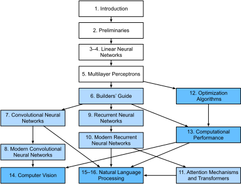

Préface¶
Il y a seulement quelques années, il n’y avait pas de légions de chercheurs en apprentissage profond développant des produits et services intelligents au sein des grandes entreprises et des startups. Quand nous sommes entrés dans ce domaine, l’apprentissage automatique (machine learning) ne faisait pas la une des journaux quotidiens. Nos parents n’avaient aucune idée de ce qu’était l’apprentissage automatique, et encore moins pourquoi nous pourrions le préférer à une carrière en médecine ou en droit. L’apprentissage automatique était une discipline académique théorique dont l’importance industrielle était limitée à un ensemble étroit d’applications réelles, notamment la reconnaissance vocale et la vision par ordinateur. De plus, beaucoup de ces applications nécessitaient tellement de connaissances du domaine qu’elles étaient souvent considérées comme des domaines entièrement distincts pour lesquels l’apprentissage automatique n’était qu’un petit composant. À cette époque, les réseaux de neurones — les prédécesseurs des méthodes d’apprentissage profond sur lesquelles nous nous concentrons dans ce livre — étaient généralement considérés comme démodés.
Pourtant, en seulement quelques années, l’apprentissage profond a pris le monde par surprise, entraînant des progrès rapides dans des domaines aussi divers que la vision par ordinateur, le traitement du langage naturel, la reconnaissance automatique de la parole, l’apprentissage par renforcement et l’informatique biomédicale. De plus, le succès de l’apprentissage profond dans tant de tâches d’intérêt pratique a même catalysé des développements en apprentissage automatique théorique et en statistiques. Grâce à ces avancées, nous pouvons maintenant construire des voitures qui se conduisent elles-mêmes avec plus d’autonomie que jamais auparavant (bien que moins d’autonomie que ce que certaines entreprises voudraient vous faire croire), des systèmes de dialogue qui déboguent le code en posant des questions de clarification, et des agents logiciels battant les meilleurs joueurs humains du monde à des jeux de société comme le Go, un exploit que l’on pensait autrefois à des décennies de distance. Déjà, ces outils exercent une influence de plus en plus large sur l’industrie et la société, changeant la façon dont les films sont réalisés, les maladies sont diagnostiquées, et jouant un rôle croissant dans les sciences fondamentales — de l’astrophysique à la modélisation du climat, en passant par la prévision météorologique et la biomédecine.
À propos de ce livre¶
Ce livre représente notre tentative de rendre l’apprentissage profond accessible, en vous enseignant les concepts, le contexte et le code.
Un support unique combinant code, mathématiques et HTML¶
Pour que toute technologie informatique atteigne son plein impact, elle doit être bien comprise, bien documentée et soutenue par des outils matures et bien entretenus. Les idées clés doivent être clairement distillées, minimisant le temps d’apprentissage nécessaire pour mettre à jour les nouveaux praticiens. Les bibliothèques matures devraient automatiser les tâches courantes, et le code d’exemple devrait faciliter pour les praticiens la modification, l’application et l’extension d’applications courantes pour répondre à leurs besoins.
À titre d’exemple, prenez les applications web dynamiques. Malgré un grand nombre d’entreprises, telles qu’Amazon, développant des applications web basées sur des bases de données avec succès dans les années 1990, le potentiel de cette technologie pour aider les entrepreneurs créatifs n’a été réalisé à un degré bien plus élevé qu’au cours des dix dernières années, en partie grâce au développement de frameworks puissants et bien documentés.
Tester le potentiel de l’apprentissage profond présente des défis uniques car toute application unique rassemble diverses disciplines. Appliquer l’apprentissage profond nécessite de comprendre simultanément : (i) les motivations pour formuler un problème d’une manière particulière ; (ii) la forme mathématique d’un modèle donné ; (iii) les algorithmes d’optimisation pour ajuster les modèles aux données ; (iv) les principes statistiques qui nous indiquent quand nous devrions nous attendre à ce que nos modèles généralisent à des données non vues et les méthodes pratiques pour certifier qu’ils ont, en fait, généralisé ; et (v) les techniques d’ingénierie requises pour entraîner les modèles efficacement, en naviguant les pièges du calcul numérique et en tirant le meilleur parti du matériel disponible. Enseigner les compétences de pensée critique requises pour formuler des problèmes, les mathématiques pour les résoudre, et les outils logiciels pour implémenter ces solutions tout en un seul endroit présente des défis formidables. Notre objectif dans ce livre est de présenter une ressource unifiée pour mettre à niveau les futurs praticiens.
Quand nous avons commencé ce projet de livre, il n’y avait pas de ressources qui simultanément : (i) restaient à jour ; (ii) couvraient l’étendue des pratiques modernes de l’apprentissage automatique avec une profondeur technique suffisante ; et (iii) entrelaçaient une exposition de la qualité que l’on attend d’un manuel scolaire avec le code propre et exécutable que l’on attend d’un tutoriel pratique. Nous avons trouvé de nombreux exemples de code illustrant comment utiliser un framework d’apprentissage profond donné (par exemple, comment faire du calcul numérique de base avec des matrices dans TensorFlow) ou pour implémenter des techniques particulières (par exemple, des extraits de code pour LeNet, AlexNet, ResNet, etc.) éparpillés à travers divers articles de blog et dépôts GitHub. Cependant, ces exemples se concentraient typiquement sur comment implémenter une approche donnée, mais omettaient la discussion sur pourquoi certaines décisions algorithmiques sont prises. Alors que certaines ressources interactives sont apparues sporadiquement pour aborder un sujet particulier, par exemple, les articles de blog engageants publiés sur le site Distill, ou des blogs personnels, ils ne couvraient que des sujets choisis en apprentissage profond, et manquaient souvent de code associé. D’un autre côté, alors que plusieurs manuels d’apprentissage profond ont émergé — par exemple, , qui propose une étude complète sur les bases de l’apprentissage profond — ces ressources ne marient pas les descriptions aux réalisations des concepts en code, laissant parfois les lecteurs désemparés quant à la manière de les implémenter. De plus, trop de ressources sont cachées derrière les murs de paiement des fournisseurs de cours commerciaux.
Nous avons entrepris de créer une ressource qui pourrait : (i) être librement disponible pour tout le monde ; (ii) offrir une profondeur technique suffisante pour fournir un point de départ sur le chemin de devenir réellement un chercheur en apprentissage automatique appliqué ; (iii) inclure du code exécutable, montrant aux lecteurs comment résoudre des problèmes en pratique ; (iv) permettre des mises à jour rapides, à la fois par nous et aussi par la communauté au sens large ; et (v) être complétée par un forum pour une discussion interactive des détails techniques et pour répondre aux questions.
Ces objectifs étaient souvent en conflit. Les équations, théorèmes et
citations sont mieux gérés et mis en page en LaTeX. Le code est mieux
décrit en Python. Et les pages web sont natives en HTML et JavaScript.
De plus, nous voulons que le contenu soit accessible à la fois comme
code exécutable, comme livre physique, comme PDF téléchargeable, et sur
Internet comme site web. Aucun flux de travail ne semblait adapté à ces
exigences, nous avons donc décidé d’assembler le nôtre
(sec_how_to_contribute). Nous avons opté pour GitHub pour
partager les sources et faciliter les contributions de la communauté ;
les notebooks Jupyter pour mélanger code, équations et texte ; Sphinx
comme moteur de rendu ; et Discourse comme plateforme de discussion.
Bien que notre système ne soit pas parfait, ces choix constituent un
compromis entre les préoccupations concurrentes. Nous pensons que Dive
into Deep Learning pourrait être le premier livre publié en utilisant
un tel flux de travail intégré.
Apprendre par la pratique¶
De nombreux manuels présentent les concepts successivement, couvrant chacun avec des détails exhaustifs. Par exemple, l’excellent manuel de
enseigne chaque sujet si minutieusement que parvenir au chapitre sur la régression linéaire nécessite une quantité de travail non triviale. Alors que les experts adorent ce livre précisément pour sa rigueur, pour les vrais débutants, cette propriété limite son utilité en tant que texte d’introduction.
Dans ce livre, nous enseignons la plupart des concepts juste à temps. En d’autres termes, vous apprendrez les concepts au moment même où ils sont nécessaires pour accomplir une fin pratique. Bien que nous prenions un peu de temps au début pour enseigner les préliminaires fondamentaux, comme l’algèbre linéaire et les probabilités, nous voulons que vous goûtiez à la satisfaction d’entraîner votre premier modèle avant de vous soucier de concepts plus ésotériques.
Mis à part quelques notebooks préliminaires qui fournissent un cours intensif sur les bases mathématiques, chaque chapitre suivant introduit à la fois un nombre raisonnable de nouveaux concepts et fournit plusieurs exemples de travail autonomes, utilisant des jeux de données réels. Cela a présenté un défi organisationnel. Certains modèles pourraient logiquement être regroupés dans un seul notebook. Et certaines idées pourraient être mieux enseignées en exécutant plusieurs modèles successivement. En revanche, il y a un grand avantage à adhérer à une politique d’un exemple de travail, un notebook : cela rend aussi facile que possible pour vous de lancer vos propres projets de recherche en exploitant notre code. Copiez simplement un notebook et commencez à le modifier.
Tout au long, nous entrelaçons le code exécutable avec le matériel contextuel selon les besoins. En général, nous penchons du côté de rendre les outils disponibles avant de les expliquer complètement (souvent en complétant le contexte plus tard). Par exemple, nous pourrions utiliser la descente de gradient stochastique avant d’expliquer pourquoi elle est utile ou d’offrir une intuition sur la raison pour laquelle elle fonctionne. Cela aide à donner aux praticiens les munitions nécessaires pour résoudre les problèmes rapidement, au prix de demander au lecteur de nous faire confiance pour certaines décisions éditoriales.
Ce livre enseigne les concepts de l’apprentissage profond à partir de zéro. Parfois, nous plongeons dans des détails fins sur des modèles qui seraient typiquement cachés aux utilisateurs par les frameworks d’apprentissage profond modernes. Cela se produit particulièrement dans les tutoriels de base, où nous voulons que vous compreniez tout ce qui se passe dans une couche ou un optimiseur donné. Dans ces cas, nous présentons souvent deux versions de l’exemple : une où nous implémentons tout à partir de zéro, en nous appuyant uniquement sur des fonctionnalités de type NumPy et la différenciation automatique, et un exemple plus pratique, où nous écrivons un code succinct en utilisant les API de haut niveau des frameworks d’apprentissage profond. Après avoir expliqué comment un composant fonctionne, nous nous appuyons sur l’API de haut niveau dans les tutoriels suivants.
Contenu et structure¶
Le livre peut être divisé en environ trois parties, traitant des préliminaires, des techniques d’apprentissage profond, et des sujets avancés axés sur les systèmes réels et les applications (Fig. 1).

Fig. 1 Structure du livre.¶
Partie 1 : Bases et préliminaires. Le Section 1 est une introduction à l’apprentissage profond. Ensuite, dans le Section 2, nous vous mettons rapidement à niveau sur les prérequis nécessaires pour l’apprentissage profond pratique, comme la façon de stocker et de manipuler les données, et comment appliquer diverses opérations numériques basées sur des concepts élémentaires de l’algèbre linéaire, du calcul et des probabilités. Le Section 3 et le
chap_perceptronscouvrent les concepts et techniques les plus fondamentaux de l’apprentissage profond, y compris la régression et la classification ; les modèles linéaires ; les perceptrons multicouches ; et le surapprentissage et la régularisation.Partie 2 : Techniques modernes d’apprentissage profond. Le
chap_computationdécrit les principaux composants computationnels des systèmes d’apprentissage profond et pose les jalons pour nos implémentations ultérieures de modèles plus complexes. Ensuite, lechap_cnnet lechap_modern_cnnprésentent les réseaux de neurones convolutionnels (CNN), des outils puissants qui forment l’épine dorsale de la plupart des systèmes de vision par ordinateur modernes. De même, lechap_rnnet lechap_modern_rnnintroduisent les réseaux de neurones récurrents (RNN), des modèles qui exploitent la structure séquentielle (par exemple, temporelle) dans les données et sont couramment utilisés pour le traitement du langage naturel et la prédiction de séries chronologiques. Dans lechap_attention-and-transformers, nous décrivons une classe relativement nouvelle de modèles, basés sur les mécanismes dits d’attention, qui ont détrôné les RNN comme architecture dominante pour la plupart des tâches de traitement du langage naturel. Ces sections vous mettront à jour sur les outils les plus puissants et les plus généraux qui sont largement utilisés par les praticiens de l’apprentissage profond.Partie 3 : Évolutivité, efficacité et applications (disponible en ligne). Dans le Chapitre 12, nous discutons de plusieurs algorithmes d’optimisation courants utilisés pour entraîner des modèles d’apprentissage profond. Ensuite, dans le Chapitre 13, nous examinons plusieurs facteurs clés qui influencent les performances computationnelles du code d’apprentissage profond. Ensuite, dans le Chapitre 14, nous illustrons les principales applications de l’apprentissage profond en vision par ordinateur. Enfin, dans le Chapitre 15 et le Chapitre 16, nous démontrons comment pré-entraîner des modèles de représentation du langage et les appliquer à des tâches de traitement du langage naturel.
Code¶
La plupart des sections de ce livre comportent du code exécutable. Nous pensons que certaines intuitions se développent mieux via des essais et erreurs, en peaufinant le code par petites touches et en observant les résultats. Idéalement, une théorie mathématique élégante pourrait nous dire précisément comment ajuster notre code pour obtenir un résultat souhaité. Cependant, les praticiens de l’apprentissage profond aujourd’hui doivent souvent s’aventurer là où aucune théorie solide ne fournit de guide. Malgré nos meilleures tentatives, les explications formelles de l’efficacité de diverses techniques font encore défaut, pour diverses raisons : les mathématiques pour caractériser ces modèles peuvent être très difficiles ; l’explication dépend probablement de propriétés des données qui manquent actuellement de définitions claires ; et les recherches sérieuses sur ces sujets n’ont commencé que récemment à s’intensifier. Nous espérons qu’à mesure que la théorie de l’apprentissage profond progresse, chaque future édition de ce livre fournira des informations qui éclipseront celles actuellement disponibles.
Pour éviter les répétitions inutiles, nous capturons certaines de nos
fonctions et classes les plus fréquemment importées et utilisées dans le
package d2l. Tout au long, nous marquons les blocs de code (tels que
les fonctions, les classes, ou les collections de déclarations
d’importation) avec #@save pour indiquer qu’ils seront accessibles
plus tard via le package d2l. Nous proposons un aperçu détaillé de
ces classes et fonctions dans la sec_d2l. Le package d2l
est léger et ne nécessite que les dépendances suivantes :
#@save
import collections
import hashlib
import inspect
import math
import os
import random
import re
import shutil
import sys
import tarfile
import time
import zipfile
from collections import defaultdict
import pandas as pd
import requests
from IPython import display
from matplotlib import pyplot as plt
from matplotlib_inline import backend_inline
d2l = sys.modules[__name__]
Public cible¶
Ce livre est destiné aux étudiants (en licence ou master), aux ingénieurs et aux chercheurs qui souhaitent acquérir une solide maîtrise des techniques pratiques de l’apprentissage profond. Parce que nous expliquons chaque concept à partir de zéro, aucun bagage préalable en apprentissage profond ou en apprentissage automatique n’est requis. Expliquer complètement les méthodes de l’apprentissage profond nécessite quelques mathématiques et de la programmation, mais nous supposerons seulement que vous disposez de quelques bases, notamment des notions modestes d’algèbre linéaire, de calcul, de probabilités et de programmation en Python. Juste au cas où vous auriez oublié quelque chose, l’Annexe en ligne fournit un rappel sur la plupart des mathématiques que vous trouverez dans ce livre. Généralement, nous donnerons la priorité à l’intuition et aux idées plutôt qu’à la rigueur mathématique. Si vous souhaitez étendre ces fondements au-delà des prérequis pour comprendre notre livre, nous recommandons avec plaisir d’autres ressources formidables : Linear Analysis par couvre l’algèbre linéaire et l’analyse fonctionnelle de manière très approfondie. All of Statistics () fournit une merveilleuse introduction aux statistiques. Les livres et cours de Joe Blitzstein sur les probabilités et l’inférence sont des joyaux pédagogiques. Et si vous n’avez jamais utilisé Python auparavant, vous voudrez peut-être parcourir ce tutoriel Python.
Notebooks, site web, GitHub et forum¶
Tous nos notebooks peuvent être téléchargés depuis le site web D2L.ai et depuis GitHub. Associé à ce livre, nous avons lancé un forum de discussion sur discuss.d2l.ai. Chaque fois que vous avez des questions sur une section du livre, vous pouvez trouver un lien vers la page de discussion associée à la fin de chaque notebook.
Remerciements¶
Nous sommes redevables aux centaines de contributeurs pour les versions anglaise et chinoise. Ils ont aidé à améliorer le contenu et ont offert des retours précieux. Ce livre a été initialement implémenté avec MXNet comme framework principal. Nous remercions Anirudh Dagar et Yuan Tang pour avoir adapté une grande partie du code MXNet précédent en implémentations PyTorch et TensorFlow, respectivement. Depuis juillet 2021, nous avons repensé et réimplémenté ce livre en PyTorch, MXNet et TensorFlow, en choisissant PyTorch comme framework principal. Nous remercions Anirudh Dagar pour avoir adapté une grande partie du code PyTorch plus récent en implémentations JAX. Nous remercions Gaosheng Wu, Liujun Hu, Ge Zhang et Jiehang Xie de Baidu pour avoir adapté une grande partie du code PyTorch plus récent en implémentations PaddlePaddle dans la version chinoise. Nous remercions Shuai Zhang pour l’intégration du style LaTeX de la presse dans la construction du PDF.
Sur GitHub, nous remercions chaque contributeur de cette version anglaise pour l’avoir rendue meilleure pour tout le monde. Leurs identifiants GitHub ou noms sont (sans ordre particulier) : alxnorden, avinashingit, bowen0701, brettkoonce, Chaitanya Prakash Bapat, cryptonaut, Davide Fiocco, edgarroman, gkutiel, John Mitro, Liang Pu, Rahul Agarwal, Mohamed Ali Jamaoui, Michael (Stu) Stewart, Mike Müller, NRauschmayr, Prakhar Srivastav, sad-, sfermigier, Sheng Zha, sundeepteki, topecongiro, tpdi, vermicelli, Vishaal Kapoor, Vishwesh Ravi Shrimali, YaYaB, Yuhong Chen, Evgeniy Smirnov, lgov, Simon Corston-Oliver, Igor Dzreyev, Ha Nguyen, pmuens, Andrei Lukovenko, senorcinco, vfdev-5, dsweet, Mohammad Mahdi Rahimi, Abhishek Gupta, uwsd, DomKM, Lisa Oakley, Bowen Li, Aarush Ahuja, Prasanth Buddareddygari, brianhendee, mani2106, mtn, lkevinzc, caojilin, Lakshya, Fiete Lüer, Surbhi Vijayvargeeya, Muhyun Kim, dennismalmgren, adursun, Anirudh Dagar, liqingnz, Pedro Larroy, lgov, ati-ozgur, Jun Wu, Matthias Blume, Lin Yuan, geogunow, Josh Gardner, Maximilian Böther, Rakib Islam, Leonard Lausen, Abhinav Upadhyay, rongruosong, Steve Sedlmeyer, Ruslan Baratov, Rafael Schlatter, liusy182, Giannis Pappas, ati-ozgur, qbaza, dchoi77, Adam Gerson, Phuc Le, Mark Atwood, christabella, vn09, Haibin Lin, jjangga0214, RichyChen, noelo, hansent, Giel Dops, dvincent1337, WhiteD3vil, Peter Kulits, codypenta, joseppinilla, ahmaurya, karolszk, heytitle, Peter Goetz, rigtorp, Tiep Vu, sfilip, mlxd, Kale-ab Tessera, Sanjar Adilov, MatteoFerrara, hsneto, Katarzyna Biesialska, Gregory Bruss, Duy–Thanh Doan, paulaurel, graytowne, Duc Pham, sl7423, Jaedong Hwang, Yida Wang, cys4, clhm, Jean Kaddour, austinmw, trebeljahr, tbaums, Cuong V. Nguyen, pavelkomarov, vzlamal, NotAnotherSystem, J-Arun-Mani, jancio, eldarkurtic, the-great-shazbot, doctorcolossus, gducharme, cclauss, Daniel-Mietchen, hoonose, biagiom, abhinavsp0730, jonathanhrandall, ysraell, Nodar Okroshiashvili, UgurKap, Jiyang Kang, StevenJokes, Tomer Kaftan, liweiwp, netyster, ypandya, NishantTharani, heiligerl, SportsTHU, Hoa Nguyen, manuel-arno-korfmann-webentwicklung, aterzis-personal, nxby, Xiaoting He, Josiah Yoder, mathresearch, mzz2017, jroberayalas, iluu, ghejc, BSharmi, vkramdev, simonwardjones, LakshKD, TalNeoran, djliden, Nikhil95, Oren Barkan, guoweis, haozhu233, pratikhack, Yue Ying, tayfununal, steinsag, charleybeller, Andrew Lumsdaine, Jiekui Zhang, Deepak Pathak, Florian Donhauser, Tim Gates, Adriaan Tijsseling, Ron Medina, Gaurav Saha, Murat Semerci, Lei Mao, Levi McClenny, Joshua Broyde, jake221, jonbally, zyhazwraith, Brian Pulfer, Nick Tomasino, Lefan Zhang, Hongshen Yang, Vinney Cavallo, yuntai, Yuanxiang Zhu, amarazov, pasricha, Ben Greenawald, Shivam Upadhyay, Quanshangze Du, Biswajit Sahoo, Parthe Pandit, Ishan Kumar, HomunculusK, Lane Schwartz, varadgunjal, Jason Wiener, Armin Gholampoor, Shreshtha13, eigen-arnav, Hyeonggyu Kim, EmilyOng, Bálint Mucsányi, Chase DuBois, Juntian Tao, Wenxiang Xu, Lifu Huang, filevich, quake2005, nils-werner, Yiming Li, Marsel Khisamutdinov, Francesco “Fuma” Fumagalli, Peilin Sun, Vincent Gurgul, qingfengtommy, Janmey Shukla, Mo Shan, Kaan Sancak, regob, AlexSauer, Gopalakrishna Ramachandra, Tobias Uelwer, Chao Wang, Tian Cao, Nicolas Corthorn, akash5474, kxxt, zxydi1992, Jacob Britton, Shuangchi He, zhmou, krahets, Jie-Han Chen, Atishay Garg, Marcel Flygare, adtygan, Nik Vaessen, bolded, Louis Schlessinger, Balaji Varatharajan, atgctg, Kaixin Li, Victor Barbaros, Riccardo Musto, Elizabeth Ho, azimjonn, Guilherme Miotto, Alessandro Finamore, Joji Joseph, Anthony Biel, Zeming Zhao, shjustinbaek, gab-chen, nantekoto, Yutaro Nishiyama, Oren Amsalem, Tian-MaoMao, Amin Allahyar, Gijs van Tulder, Mikhail Berkov, iamorphen, Matthew Caseres, Andrew Walsh, pggPL, RohanKarthikeyan, Ryan Choi, and Likun Lei.
Nous remercions Amazon Web Services, en particulier Wen-Ming Ye, George Karypis, Swami Sivasubramanian, Peter DeSantis, Adam Selipsky et Andrew Jassy pour leur soutien généreux dans la rédaction de ce livre. Sans le temps disponible, les ressources, les discussions avec les collègues et les encouragements continus, ce livre n’aurait pas vu le jour. Pendant la préparation du livre pour la publication, Cambridge University Press a offert un excellent soutien. Nous remercions notre éditeur David Tranah pour son aide et son professionnalisme.
Résumé¶
L’apprentissage profond a révolutionné la reconnaissance de formes, introduisant une technologie qui alimente désormais un large éventail de technologies, dans des domaines aussi divers que la vision par ordinateur, le traitement du langage naturel et la reconnaissance automatique de la parole. Pour appliquer avec succès l’apprentissage profond, vous devez comprendre comment formuler un problème, les mathématiques de base de la modélisation, les algorithmes pour ajuster vos modèles aux données, et les techniques d’ingénierie pour tout implémenter. Ce livre présente une ressource complète, comprenant de la prose, des figures, des mathématiques et du code, le tout en un seul endroit.
Exercices¶
Créez un compte sur le forum de discussion de ce livre discuss.d2l.ai.
Installez Python sur votre ordinateur.
Suivez les liens en bas de section vers le forum, où vous pourrez chercher de l’aide, discuter du livre et trouver des réponses à vos questions en échangeant avec les auteurs et la communauté au sens large.